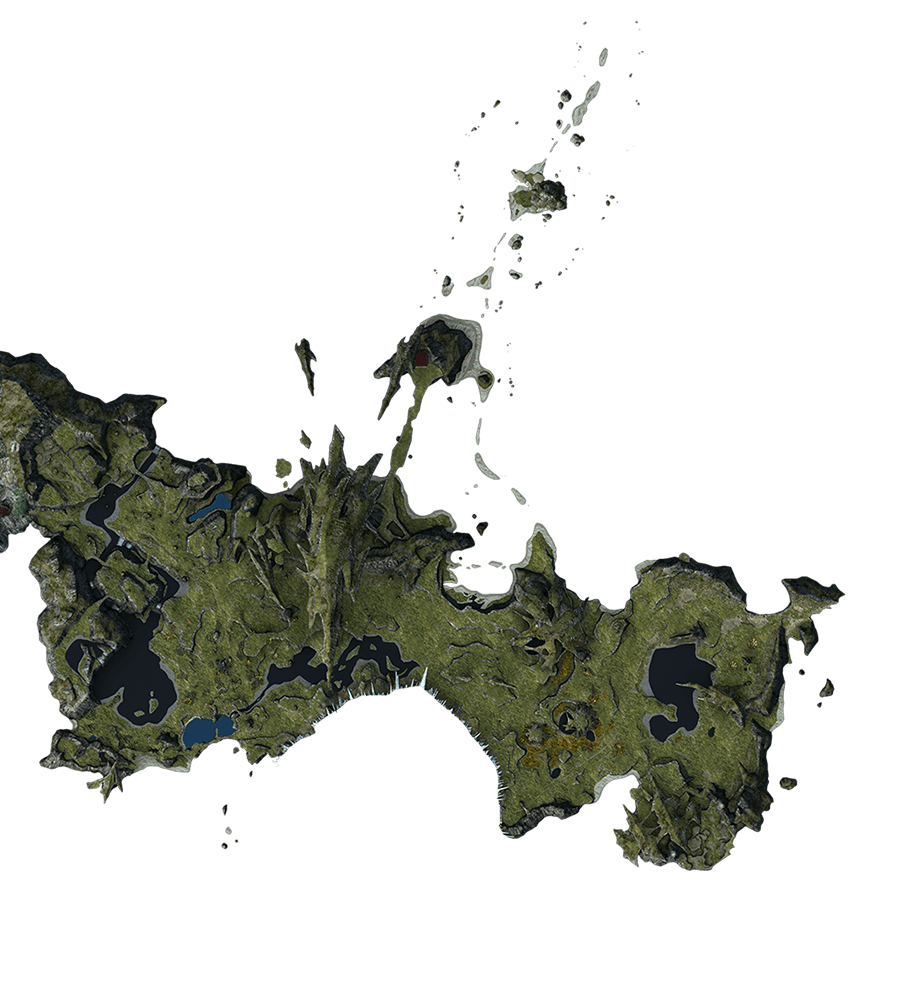
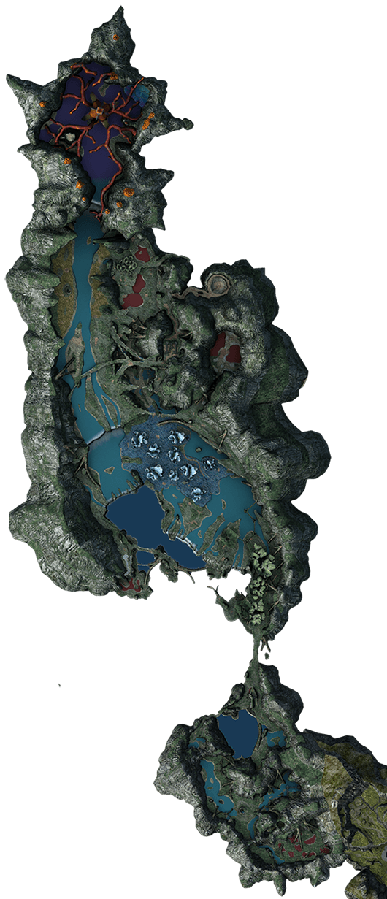
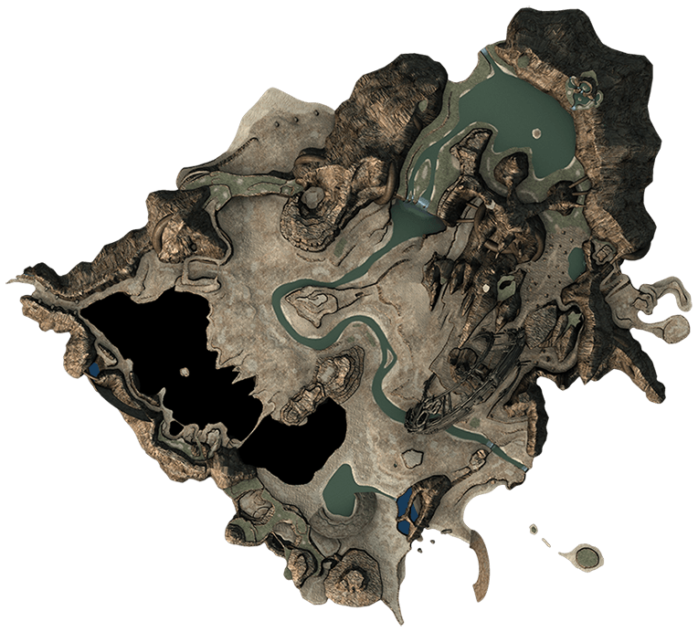
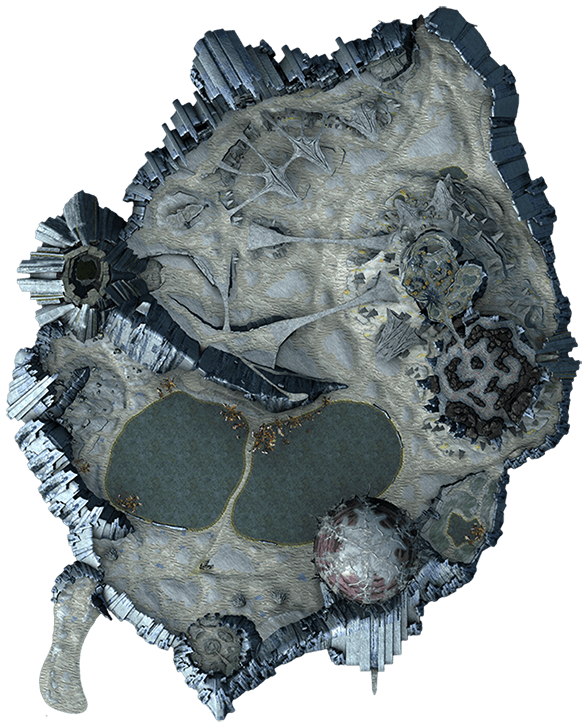
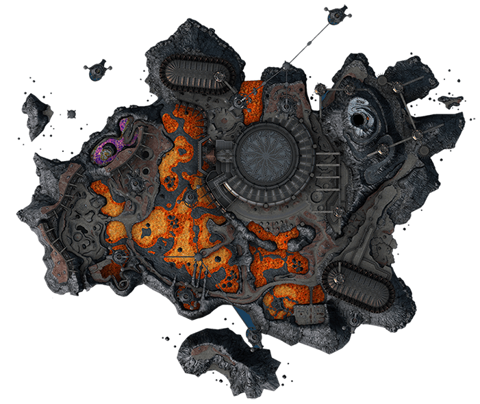

コレペディア
Picking up glowing blue crystals as you travel across 惑星ミラ automatically logs each コレクションアイテム into コレペディア while leaving the item itself in your inventory for quests. Filling out categories and regional cards showers your entire roster with hundreds of バトルポイント, rare probes, and 50  ホロフィギュア toward
ホロフィギュア toward  ザ・オタク, with Lucky slots granting +2 BP even to companions you have yet to recruit.
ザ・オタク, with Lucky slots granting +2 BP even to companions you have yet to recruit.
All 300 entries spawn at any time of day and in any weather. Whenever a stubborn Prime or Unique item holds up a row, check the best spawn zone and nearest FNスポット listed in that continent's table below to sweep its highest-density area.
 原初の荒野0/62 (0%)
原初の荒野0/62 (0%)
Stretching right outside New LA's gates, Primordia's rolling plains, lakes, and cliff overhangs make this 62-item card the easiest regional page to finish early, rewarding you with 32 Battle Points and a high-value Booster Probe G2 for your network.
Full 原初の荒野 registration awards +32 BP and  強化プローブG2.
強化プローブG2.
- 野菜 (6 items) grants +5 BP and
 ホロフィギュア：ナイフシリーズ.
ホロフィギュア：ナイフシリーズ. - 果実 (6 items) grants +5 BP and ホロフィギュア：ドスシリーズ.
- 草花 (8 items) grants +5 BP and ホロフィギュア：サクラバ・ミドル男用.
- 小動物 (7 items) grants +5 BP and ホロフィギュア：デュアルシリーズ.
- 昆虫 (7 items) grants +5 BP and ホロフィギュア：グラナダ・ミドル女用.
- 自然物 (6 items) grants +5 BP and ホロフィギュア：ブレードシリーズ.
- 落下物 (7 items) grants +5 BP and ホロフィギュア：サクラバ・ドール男用.
- 遺物 (5 items) grants +5 BP and ホロフィギュア：アサルトシリーズ.
- 異文明 (5 items) grants +5 BP and ホロフィギュア：ランサシリーズ.
- 謎 (5 items) grants +5 BP and ホロフィギュア：シールドシリーズ.

| Done | Item | Category | Rarity | Best Zone & Nearest FN Sites |
|---|---|---|---|---|
| アジラ瓜 | 野菜 | Common · Lucky | All Areas, high chance in Talon Rock Summit · FN108, FN110, FN111, FN112 (100%) | |
| レーシー芋 | 野菜 | Common | Biahno Lake · FN102, FN107, FN104, FN106 (100%) | |
| サディラナレタス | 野菜 | Rare | East Gate Plain and Seaswept Base · FN119, FN116, FN120, FN117 (100%) | |
| モサキャベツ | 野菜 | Rare | Janpath Lake and North Janpath Plain · FN121, FN117, FN118, FN115 (100%) | |
| ケポ人参 | 野菜 | Unique | Biahno Lake, West Gate Plain, Sayram Lake, and Sickle Rock Rise · FN102, FN107, FN112, FN104 (100%) | |
| アミドレシアトマト | 野菜 | Prime | Sayram Lake and Sickle Rock Rise · FN112, FN110, FN107, FN114 (100%) | |
| クランジェリー | 果実 | Common | All Areas · FN113, FN115, FN108, FN118 (30%) | |
| ロックレンジ | 果実 | Common · Lucky | East Gate Plain and Seaswept Base · FN119, FN116, FN120, FN117 (30%) | |
| ストロレニー | 果実 | Common | Biahno Lake and West Gate Plain · FN102, FN107, FN104, FN106 (30%) | |
| スタップル | 果実 | Rare | Biahno Lake, Grieving Plains, and West Gate Plain · FN107, FN106, FN110, FN102 (30%) | |
| ワルドチェリー | 果実 | Rare | East Gate Plain and Seaswept Base · FN119, FN120, FN117, FN116 (30%) | |
| ソナーレモン | 果実 | Unique | Janpath Lake and North Janpath Plain · FN118, FN121, FN117, FN115 (30%) | |
| ゼゼオオバコ | 草花 | Common | All Areas, higher rate in Biahno Lake · FN113, FN106, FN103, FN105 (30%) | |
| ノーランユリ | 草花 | Common | Arendt Bridge · FN113, FN109, FN111 (30%) | |
| スイタネリネ | 草花 | Rare | Biahno Lake, Grieving Plains, and West Gate Plain · FN102, FN107, FN104, FN106 (17%) | |
| キランマタタビ | 草花 | Rare | Biahno Hills, Unicorn Rock, and Sicklestone Rise · FN113, FN106, FN103, FN105 (17%) | |
| ドガタンポポ | 草花 | Unique · Lucky | East Gate Plain and Seaswept Base · FN119, FN116, FN120, FN117 (20%) | |
| ソナハーブ | 草花 | Unique | Northpointe Cove and Eastern Northpointe Beach · FN111, FN109, FN113, FN115 (20%) | |
| ガルドサンショウソウ | 草花 | Prime | Caves, higher rate in Beasts’ Lair · FN101, FN221, FN115, FN113 (4%) | |
| サトリスイセン | 草花 | Prime | Sayram Lake, Sickle Rock Rise (higher rate), Northpointe Cove, Eastern Northpointe Beach, East Gate Plain, and Seaswept Base · FN119, FN113, FN112, FN110 (3%) | |
| リザッティス | 小動物 | Common | All Areas · FN101, FN221, FN115, FN110 (30%) | |
| コアレトリ | 小動物 | Common | Northpointe Beach West, FN Site 108, and Talon Rock Third Terrane · FN108, FN110, FN111, FN112 (25%) | |
| グリンドリス | 小動物 | Common | Arendt Bridge and Castaway Cavern · FN113, FN109, FN111 (25%) | |
| ボーバッド | 小動物 | Rare | Stickstone Rise · FN113, FN106, FN103, FN105 (20%) | |
| イワッシィ | 小動物 | Unique · Lucky | Biahno Lake and West Gate Plain · FN107, FN104, FN102, FN106 (20%) | |
| ジージーラビ | 小動物 | Unique | Stickstone Rise · FN113, FN106, FN103, FN105 (20%) | |
| アシゼル | 小動物 | Unique | East Gate Plain and Seaswept Base · FN119, FN116, FN120, FN117 (30%) | |
| ボールモスキート | 昆虫 | Common · Lucky | All Areas · FN101, FN221, FN115, FN110 (30%) | |
| 伸縮バッタ | 昆虫 | Common | Sayram Lake and Sickle Rock Rise · FN112, FN110, FN114, FN115 (30%) | |
| トラクタビートル | 昆虫 | Common | Janpath Lake and North Janpath Plain · FN121, FN117, FN118, FN115 (25%) | |
| イッセンテントウムシ | 昆虫 | Rare | Sayram Lake, Sickle Rock Rise, and Caves · FN110, FN112, FN114, FN115 (17%) | |
| メテオイーター | 昆虫 | Unique | Janpath Lake and North Janpath Plain · FN115, FN121, FN117, FN118 (20%) | |
| サスライアリ | 昆虫 | Unique | Sayram Lake and Sickle Rock Rise · FN112, FN110, FN114, FN115 (20%) | |
| アサシントビムシ | 昆虫 | Prime | Janpath Lake and North Janpath Plain · FN117, FN121, FN118, FN115 (9%) | |
| ログニエの流木 | 自然物 | Rare | Arendt Bridge · FN113, FN111, FN109 (22%) | |
| 白砂鉄 | 自然物 | Rare | Janpath Lake and North Janpath Plain · FN121, FN117, FN118, FN115 (20%) | |
| フィルエロの糞 | 自然物 | Unique | Northpointe Beach and Arendt Bridge · FN108, FN110, FN111, FN113 (20%) | |
| サネラク真珠 | 自然物 | Unique | Northpointe Beach and Caves · FN101, FN221, FN110, FN108 (20%) | |
| アルナシア鉱樹 | 自然物 | Prime · Lucky | Biahno Lake and West Gate Plain · FN102, FN107, FN104, FN106 (10%) | |
| アウロラの骨 | 自然物 | Prime | Arendt Bridge and Caves · FN113, FN115, FN110, FN111 (10%) | |
| 偏向シールド反射鏡 | 落下物 | Common | All Areas · FN121, FN117, FN118, FN115 (25%) | |
| 新式無水ラジエーター | 落下物 | Common | Stickstone Rise and Unicorn Rock · FN113, FN106, FN103, FN105 (25%) | |
| 超耐熱ステンレス配管 | 落下物 | Common | East Gate Plain and Seaswept Base · FN119, FN116, FN120, FN117 (30%) | |
| L-002燃料タンク | 落下物 | Common | All Areas · FN112, FN110, FN114, FN115 (30%) | |
| 空間分析計L-002 | 落下物 | Common | All Areas · FN113, FN115, FN108, FN118 (30%) | |
| スペーススーツUS-X | 落下物 | Rare · Lucky | Northpointe Cove and East Northpointe Beach · FN111, FN109, FN113, FN115 (22%) | |
| 遠心光棒発生装置 | 落下物 | Rare | Sayram Lake and Sickle Rock Rise · FN112, FN110, FN114, FN115 (17%) | |
| ギザギザすり鉢 | 遺物 | Rare | Northpointe Cove, East Northpointe Beach, and Primordia Waters Islands · FN115, FN113, FN118, FN108 (23%) | |
| どんぐりソロバン | 遺物 | Unique | Arendt Bridge, Northpointe Cove, East Northpointe Beach, and Primordia Waters Islands · FN113, FN111, FN109, FN115 (20%) | |
| フェイスウッド | 遺物 | Prime | Arendt Bridge · FN113, FN111, FN109 (3%) | |
| はっぱの財布 | 遺物 | Prime · Lucky | Stickstone Rise and Unicorn Rock · FN113, FN106, FN103, FN105 (5%) | |
| ハナウタストーン | 遺物 | Prime | Biahno Lake and West Gate Plain · FN102, FN121, FN107, FN117 (3%) | |
| ハイアクセラレータ | 異文明 | Rare | Northpointe Beach West · FN108, FN110, FN111, FN112 (20%) | |
| クラッシュリング | 異文明 | Rare | Arendt Bridge · FN113, FN109, FN111 (20%) | |
| トランスライト | 異文明 | Prime | East Gate Plain and Seaswept Base · FN119, FN116, FN120, FN117 (10%) | |
| ダジリングボトル | 異文明 | Prime | Northpointe Beach West · FN108, FN110, FN111, FN112 (10%) | |
| グロジウムコア | 異文明 | Prime · Lucky | Northpointe Beach West, Stickstone Rise, and Unicorn Rock · FN113, FN108, FN110, FN106 (10%) | |
| 座禅パウダー | 謎 | Rare | Northpointe Beach West · FN108, FN110, FN111, FN112 (20%) | |
| カリフォルニアの夕日 | 謎 | Rare · Lucky | Caves · FN101, FN221, FN115, FN113 (20%) | |
| 双眼の新世界 | 謎 | Unique | Caves · FN101, FN221, FN115, FN113 (20%) | |
| 古の誘惑 | 謎 | Unique | Stickstone Rise and Unicorn Rock · FN113, FN106, FN103, FN105 (20%) | |
| 女神の口づけ | 謎 | Prime | Northpointe Cove, Northpointe Beach East, and Primordia Waters Islands · FN113, FN111, FN115, FN109 (10%) |
夜光の森0/60 (0%)
From the shallow pools of South Coast up to the canopy of Divine Roost, Noctilum's 60 collectibles cluster tightly around water basins and giant root bridges, paying out Battle Points and Holofigures as you push northward.
Full 夜光の森 registration awards +32 BP and ドール燃料回復プローブ.
- 野菜 (5 items) grants +5 BP and ホロフィギュア：エスクドシリーズ.
- 果実 (8 items) grants +5 BP and ホロフィギュア：グラナダ・ミドル男用.
- 草花 (7 items) grants +5 BP and ホロフィギュア：マシンシリーズ.
- 小動物 (6 items) grants +5 BP and ホロフィギュア：サクラバ・ヘヴィ女用.
- 昆虫 (8 items) grants +5 BP and ホロフィギュア：エスパダⅡシリーズ.
- 自然物 (7 items) grants +5 BP and ホロフィギュア：ラージョシリーズ.
- 落下物 (6 items) grants +5 BP and ホロフィギュア：ヴェルハシリーズ.
- 遺物 (4 items) grants +5 BP and ホロフィギュア：サクラバ・ライト女用.
- 異文明 (4 items) grants +5 BP and ホロフィギュア：アソールトシリーズ.
- 謎 (5 items) grants +5 BP and ホロフィギュア：セイバーシリーズ.

| Done | Item | Category | Rarity | Best Zone & Nearest FN Sites |
|---|---|---|---|---|
| カセラス茸 | 野菜 | Rare | Divine Roost · FN206, FN201, FN207 (100%) | |
| ザンデモ茄子 | 野菜 | Rare | Qing Long Glade and Decapotamon Vista · FN215, FN218, FN212, FN216 (100%) | |
| モロウゼンマイ | 野菜 | Unique | Divine Roost, Qing Long Glade, FN Site 218, and Decapotamon Vista · FN206, FN215, FN218, FN212 (6%) | |
| フォドルナロー菜 | 野菜 | Prime | Qing Long Glade and Decapotamon Vista · FN215, FN218, FN212, FN216 (3%) | |
| シベカセラス茸 | 野菜 | Prime · Lucky | Bloodpond Basin and Caves · FN217, FN222, FN210, FN211 (10%) | |
| ンチャグアバ | 果実 | Common | All Areas · FN208, FN202, FN215, FN207 (25%) | |
| フラッパイヤ | 果実 | Common | Divine Roost (Flight) · FN206, FN207, FN201 (25%) | |
| ハババコー | 果実 | Rare | Elephant’s Trunk and Humdrum Peaks · FN223, FN225, FN220, FN219 (30%) | |
| アマナドリアン | 果実 | Rare | Elephant’s Trunk, FN Site 221, and Humdrum Peaks · FN220, FN223, FN225, FN219 (30%) | |
| ラバマンゴー | 果実 | Unique | Bloodpond Basin and Caves · FN210, FN211, FN209, FN224 (30%) | |
| スパウメ | 果実 | Unique · Lucky | Serpentine Pass and Caves · FN205, FN209, FN216, FN224 (30%) | |
| リーフバナナ | 果実 | Prime | Elephant’s Trunk, Canopied Nightwood, and Humdrum Peaks · FN223, FN225, FN220, FN219 (10%) | |
| ゴッドメロン | 果実 | Prime | Middle Hushflood, Elephant’s Trunk, FN Site 202, and Humdrum Peaks · FN223, FN225, FN220, FN203 (10%) | |
| モーンヒマワリ | 草花 | Common | All Areas · FN210, FN211, FN208, FN215 (30%) | |
| リアスズラン | 草花 | Common | Weeping Whitewood · FN206, FN211, FN214, FN215 (30%) | |
| ナズラカズラ | 草花 | Common · Lucky | Elephant’s Trunk and Humdrum Peaks · FN223, FN225, FN220, FN219 (30%) | |
| ミュナリアフラワー | 草花 | Rare | Rustpool Bank and Old Dragontail Tree · FN217, FN222, FN221, FN103 (30%) | |
| セッカコスモス | 草花 | Unique | Rustpool Bank and Old Dragontail Tree · FN222, FN103, FN217, FN221 (18%) | |
| マスケスギ | 草花 | Unique | Elephant’s Trunk and Humdrum Peaks · FN225, FN220, FN223, FN219 (18%) | |
| ネルアマリリス | 草花 | Unique | Qing Long Glade · FN215, FN218, FN212, FN216 (18%) | |
| アルナジック | 小動物 | Common | All Areas · FN221, FN209, FN222, FN224 (25%) | |
| ヒラカメレ | 小動物 | Common · Lucky | Serpentine Pass · FN205, FN216, FN209, FN204 (25%) | |
| モラウータン | 小動物 | Rare | Middle Hushflood · FN202, FN208, FN215, FN207 (20%) | |
| イグアリー | 小動物 | Unique | Elephant’s Trunk and Humdrum Peaks · FN223, FN225, FN220, FN219 (20%) | |
| グージャック | 小動物 | Prime | Bloodpond Basin · FN210, FN211, FN208, FN215 (10%) | |
| クラグチレ | 小動物 | Prime | Middle Hushflood · FN203, FN204, FN202, FN208 (10%) | |
| 夜光トンボ | 昆虫 | Common | All Areas · FN215, FN216, FN218, FN212 (25%) | |
| ストロボアブ | 昆虫 | Common | Weeping Whitewood and Dead Man’s Gulch · FN206, FN211, FN214, FN215 (30%) | |
| ジチュウガ | 昆虫 | Common | Divine Roost (Flight) · FN206, FN207, FN201 (30%) | |
| マダムカマキリ | 昆虫 | Common | Bloodpond Basin · FN210, FN211, FN208, FN215 (30%) | |
| マッドネスホーネット | 昆虫 | Common | All Areas · FN217, FN222, FN221, FN103 (30%) | |
| パルドスパイダー | 昆虫 | Rare · Lucky | Bloodpond Basin · FN211, FN208, FN215, FN210 (30%) | |
| クサキリクワガタ | 昆虫 | Rare | Old Dragontail Tree and Rustpool Banks · FN217, FN222, FN221, FN103 (17%) | |
| アブソプアゲハ | 昆虫 | Unique | Middle Hushflood, Old Dragontail Tree and Rustpool Banks · FN217, FN222, FN203, FN204 (15%) | |
| カトアの葉 | 自然物 | Common | All Areas · FN205, FN216, FN209, FN225 (25%) | |
| ウータン粘土 | 自然物 | Common | Elephant’s Trunk and Humdrum Peaks · FN223, FN225, FN220, FN219 (25%) | |
| タンブル糖の土 | 自然物 | Common · Lucky | Caves · FN209, FN224, FN221, FN204 (25%) | |
| ノカ鏡石 | 自然物 | Rare | Caves and Divine Roost (Flight) · FN206, FN209, FN224, FN221 (20%) | |
| ガルジームの水晶 | 自然物 | Unique | Weeping Whitewood and Dead Man’s Gulch · FN206, FN211, FN214, FN215 (20%) | |
| ハルネンガの綿 | 自然物 | Unique | Middle Hushflood · FN203, FN204, FN208, FN211 (20%) | |
| 幾億万の苔屑 | 自然物 | Prime | Serpentine Pass · FN205, FN216, FN209, FN204 (10%) | |
| アースフリーザー | 落下物 | Common | All Areas · FN217, FN222, FN221, FN103 (30%) | |
| ノスタルジアL-002 | 落下物 | Common | Qing Long Glade · FN215, FN218, FN212, FN216 (30%) | |
| イオンスラスタHI9 | 落下物 | Common · Lucky | Middle Hushflood · FN202, FN208, FN215, FN207 (30%) | |
| ハイパードライバーIX | 落下物 | Rare | Qing Long Glade · FN215, FN218, FN212, FN216 (30%) | |
| ジェスチャティナー | 落下物 | Rare | Serpentine Pass · FN205, FN216, FN209, FN204 (30%) | |
| 立体出力機＜創造＞ | 落下物 | Unique | Bloodpond Basin and Divine Roost (Flight) · FN206, FN210, FN211, FN208 (6%) | |
| キラワレ玉 | 遺物 | Rare | Serpentine Pass · FN205, FN216, FN209, FN204 (17%) | |
| アナモニ貝の皿 | 遺物 | Rare · Lucky | Middle Hushflood · FN202, FN208, FN215, FN207 (17%) | |
| ログニエの木船 | 遺物 | Unique | Serpentine Pass · FN205, FN216, FN209, FN204 (6%) | |
| ぴかぴかランプ | 遺物 | Prime | Caves · FN209, FN224, FN221, FN204 (3%) | |
| ウィザードユニット | 異文明 | Rare | Bloodpond Basin · FN210, FN211, FN208, FN215 (17%) | |
| オーヴァヘキサ | 異文明 | Unique | Weeping Whitewood and Dead Man’s Gulch · FN206, FN211, FN214, FN215 (20%) | |
| ジョードタンク | 異文明 | Prime · Lucky | Divine Roost (Flight) · FN206, FN201, FN207 (10%) | |
| 共鳴型マッドネーター | 異文明 | Prime | Weeping Whitewood, Dead Man’s Gulch, and Qing Long Glade · FN206, FN215, FN211, FN218 (10%) | |
| 光輝のマグネット | 謎 | Rare | Weeping Whitewood and Dead Man’s Gulch · FN211, FN214, FN215, FN223 (30%) | |
| 魅惑のゴーストミラー | 謎 | Rare | Weeping Whitewood,Dead Man’s Gulch, and Caves · FN206, FN211, FN214, FN209 (20%) | |
| 絶対正義の天秤 | 謎 | Prime | Old Dragontail Tree and Rustpool Banks · FN217, FN222, FN221, FN103 (10%) | |
| 球体電磁モーター | 謎 | Prime · Lucky | Weeping Whitewood and Dead Man’s Gulch · FN206, FN211, FN214, FN215 (10%) | |
| 原始の巨神像 | 謎 | Prime | Serpentine Pass and Divine Roost (Flight) · FN206, FN205, FN216, FN209 (10%) |
忘却の渓谷0/62 (0%)
Oblivia's 62 desert crystals favor canyon floors, ancient wreckage rings, and hidden oasis caves, turning routine probe runs across the eastern highway into steady Battle Point gains for your entire squad.
Full 忘却の渓谷 registration awards +32 BP and リサーチプローブG5.
- 野菜 (7 items) grants +5 BP and ホロフィギュア：ブリーロシリーズ.
- 果実 (4 items) grants +5 BP and ホロフィギュア：レイシリーズ.
- 草花 (6 items) grants +5 BP and ホロフィギュア：フランコシリーズ.
- 小動物 (8 items) grants +5 BP and ホロフィギュア：サクラバ・ミドル女用.
- 昆虫 (7 items) grants +5 BP and ホロフィギュア：サイコシリーズ.
- 自然物 (5 items) grants +5 BP and ホロフィギュア：サクラバ・ライト男用.
- 落下物 (4 items) grants +5 BP and ホロフィギュア：クチジョシリーズ.
- 遺物 (8 items) grants +5 BP and ホロフィギュア：マシンⅡシリーズ.
- 異文明 (6 items) grants +5 BP and ホロフィギュア：スピアシリーズ.
- 謎 (7 items) grants +5 BP and ホロフィギュア：サクラバ・ヘヴィ男用.

| Done | Item | Category | Rarity | Best Zone & Nearest FN Sites |
|---|---|---|---|---|
| グブラ白菜 | 野菜 | Common | All Areas · FN320, FN315, FN311, FN321 (25%) | |
| シヌユニにんにく | 野菜 | Common | Central Ibra Ravine, FN Site 315, FN Site 318, and FN Site 321 · FN318, FN312, FN315, FN321 (25%) | |
| コッセ豆 | 野菜 | Rare | Lake Basel and Dorian Caravan · FN320, FN316, FN321, FN310 (30%) | |
| ギ・ドウかぼちゃ | 野菜 | Unique · Lucky | Caves, Lake Basel and Dorian Caravan · FN320, FN302, FN311, FN316 (6%) | |
| ウィルピーマン | 野菜 | Unique | Aaroy Plain and Keegan Ridge · FN309, FN312, FN317, FN306 (6%) | |
| チャルパ葉 | 野菜 | Prime | Lake Basel, Dorian Caravan, FN Site 310, FN Site 311, and FN Site 316 · FN320, FN311, FN316, FN321 (10%) | |
| ドボボラブロッコリー | 野菜 | Prime | North Coast and Floating Reef · FN308, FN305, FN320, FN309 (10%) | |
| スナスイカ | 果実 | Rare | Central Ibra Ravine · FN318, FN312, FN315, FN321 (30%) | |
| ロイヤツメ | 果実 | Unique | Aaroy Plain and Keegan Ridge · FN309, FN312, FN315, FN317 (30%) | |
| エッグウイ | 果実 | Unique | Lake Basil, King’s Falls, and Dorian Caravan · FN320, FN311, FN316, FN321 (30%) | |
| ザザクロ | 果実 | Prime · Lucky | Central Ibra Ravine and Primeval Meadow · FN318, FN312, FN315, FN321 (10%) | |
| ジョボマツヨイグサ | 草花 | Rare | South Coast · FN319, FN317, FN307, FN313 (30%) | |
| グドノビル | 草花 | Rare | Sea Whisper Valley and Jair Fortress · FN322, FN321 (30%) | |
| バンバンアカザ | 草花 | Rare · Lucky | Central Ibra Ravine · FN318, FN312, FN315, FN321 (30%) | |
| ミャーエンバク | 草花 | Rare | Floating Reef (Flight) · FN320 (30%) | |
| ミュエナサボテン | 草花 | Prime | North Coast · FN305, FN308, FN309 (10%) | |
| ケファヒイラギ | 草花 | Prime | South Coast · FN317, FN313, FN319, FN307 (10%) | |
| ドラガル | 小動物 | Common · Lucky | All Areas · FN308, FN305, FN309, FN307 (30%) | |
| マボロタヌ | 小動物 | Common | Aaroy Plain and Keegan Ridge · FN309, FN312, FN317, FN315 (25%) | |
| デネモズミ | 小動物 | Common | South Coast · FN319, FN317, FN307, FN313 (25%) | |
| オクトスカ | 小動物 | Common | Central Ibra Ravine · FN318, FN312, FN315, FN321 (25%) | |
| ジェッタトル | 小動物 | Common | All Areas · FN322, FN321, FN307, FN315 (25%) | |
| クリッパナコ | 小動物 | Rare | North Coast · FN308, FN305, FN309 (17%) | |
| モンキフラト | 小動物 | Rare | Oblivia Ingress, Scabbland Fortress and Yawning Giant · FN307, FN303, FN302, FN306 (17%) | |
| メメントヒヒ | 小動物 | Unique | Central Ibra Ravine · FN318, FN312, FN315, FN321 (6%) | |
| マンプクヤモリ | 昆虫 | Common | All Areas · FN304, FN301, FN307, FN303 (30%) | |
| マインアースワーム | 昆虫 | Common | Caves · FN302, FN306, FN317, FN307 (25%) | |
| ノポンメンカメムシ | 昆虫 | Common | North Coast · FN308, FN305, FN309 (25%) | |
| カゲシンキロウ | 昆虫 | Rare | North Coast · FN308, FN305, FN309 (17%) | |
| イミナシエダナナフシ | 昆虫 | Unique · Lucky | North Coast · FN308, FN305, FN309 (6%) | |
| ウィップスコーピオン | 昆虫 | Unique | Central Ibra Ravine · FN318, FN312, FN315, FN321 (6%) | |
| ザンゲキオオカブト | 昆虫 | Prime | South Coast · FN319, FN317, FN307, FN313 (5%) | |
| ウェイネスの化石 | 自然物 | Rare | Aaroy Plain, Keegan Ridge, and Cave · FN309, FN312, FN306, FN302 (17%) | |
| ゼディスの小枝 | 自然物 | Rare | Lake Basel and Dorian Caravan · FN320, FN311, FN321, FN310 (17%) | |
| テクスベラの鍾乳石 | 自然物 | Unique | Floating Reef (Flight) and Jair Fortress · FN322, FN320, FN321 (6%) | |
| クォゴルの白銀粘土 | 自然物 | Prime | Aaroy Plain and Keegan Ridge · FN312, FN309, FN317, FN306 (10%) | |
| クリドカロの空気 | 自然物 | Prime · Lucky | Central Ibra Ravine and Caves · FN318, FN302, FN312, FN315 (10%) | |
| 航行デフレクターAiR | 落下物 | Rare | Oblivia Ingress, Yawning Giant, and Scabland Fortress · FN307, FN303, FN302, FN306 (17%) | |
| 多重鏡面太陽発電機 | 落下物 | Unique | Oblivia Ingress, Yawning Giant, and Scabland Fortress · FN307, FN303, FN302, FN306 (6%) | |
| 第五世代リサイクラー | 落下物 | Prime | Oblivia Ingress, Yawning Giant, and Scabland Fortress · FN307, FN303, FN302, FN306 (10%) | |
| L-002縮退炉Star-buck | 落下物 | Prime · Lucky | Oblivia Ingress, Yawning Giant, Scabland Fortress, and Jair Fortress · FN322, FN307, FN303, FN302 (3%) | |
| せなおしマシーン | 遺物 | Common · Lucky | All Areas · FN319, FN307, FN313, FN317 (25%) | |
| 花のこな箱 | 遺物 | Common | Aaroy Plain and Keegan Ridge · FN309, FN312, FN317, FN306 (25%) | |
| 滅びの石槍 | 遺物 | Rare | Floating Reef (Flight) · FN320 (20%) | |
| 砂岩の石版 | 遺物 | Rare | Aaroy Plain, Keegan Ridge, and Caves · FN309, FN312, FN306, FN302 (20%) | |
| ひらめき占い棒 | 遺物 | Unique | Oblivia Ingress, Yawning Giant, and Scabbland Fortress · FN302, FN305, FN307, FN303 (30%) | |
| まるまるブレスレット | 遺物 | Prime | Jair Fortress · FN322, FN321 (5%) | |
| 勇気の太鼓 | 遺物 | Prime | Caves · FN302, FN306, FN317, FN307 (10%) | |
| ノポリス | 遺物 | Prime | Aaroy Plain, Keegan Ridge, Lake Basil, and Dorian Caravan · FN320, FN309, FN312, FN311 (10%) | |
| ハッピーウォーター | 異文明 | Common | All Areas · FN320, FN311, FN315, FN321 (30%) | |
| ジェノサイドアイ | 異文明 | Common | Jair Fortress · FN322, FN321 (30%) | |
| プレリアルリアクター | 異文明 | Common · Lucky | Oblivia Ingress, Yawning Giant, and Scabbland Fortress · FN307, FN303, FN302, FN306 (30%) | |
| 相伝の鋼尾鞘 | 異文明 | Rare | Jair Fortress · FN322, FN321 (17%) | |
| ラッシュヘッド | 異文明 | Rare | South Coast · FN319, FN317, FN307, FN313 (17%) | |
| ウォーボーン | 異文明 | Unique | Jair Fortress · FN322, FN321 (6%) | |
| イッテツアイアン | 謎 | Common | All Areas · FN320, FN307, FN315, FN313 (25%) | |
| カメレオンサンド | 謎 | Common | Floating Reef (Flight), Aaroy Plain, and Keegan Ridge · FN309, FN312, FN317, FN306 (30%) | |
| 乙女の守護星 | 謎 | Common | Caves · FN302, FN306, FN317, FN307 (25%) | |
| 果てしなき叫びの岩 | 謎 | Unique · Lucky | South Coast and Caves · FN319, FN317, FN302, FN307 (20%) | |
| 朝焼けの不条理 | 謎 | Unique | South Coast and Floating Reef (Flight) · FN319, FN317, FN320, FN307 (20%) | |
| エンジェルストーン | 謎 | Unique | North Coast · FN308, FN305, FN309 (20%) | |
| ロストメモリー合成器 | 謎 | Prime | Floating Reef (Flight) · FN320 (10%) |
白樹の大陸0/58 (0%)
Across Sylvalum's white spore fields and Cleansing Spring caverns, registering all 58 entries rewards another major Battle Point bundle while filling ten more Holofigure display sets.
Full 白樹の大陸 registration awards +32 BP and 採掘プローブG10.
- 野菜 (5 items) grants +5 BP and ホロフィギュア：サクラバ・ドール女用.
- 果実 (5 items) grants +5 BP and ホロフィギュア：エスパダシリーズ.
- 草花 (5 items) grants +5 BP and ホロフィギュア：グラナダ・ライト男用.
- 小動物 (4 items) grants +5 BP and ホロフィギュア：メトラエダシリーズ.
- 昆虫 (6 items) grants +5 BP and ホロフィギュア：スピアⅡシリーズ.
- 自然物 (7 items) grants +5 BP and ホロフィギュア：スナイプⅡシリーズ.
- 落下物 (5 items) grants +5 BP and ホロフィギュア：グラナダ・ヘヴィ女用.
- 遺物 (6 items) grants +5 BP and ホロフィギュア：ナイフⅡシリーズ.
- 異文明 (7 items) grants +5 BP and ホロフィギュア：アサルトⅡシリーズ.
- 謎 (8 items) grants +5 BP and ホロフィギュア：グラナダ・ドール女用.

| Done | Item | Category | Rarity | Best Zone & Nearest FN Sites |
|---|---|---|---|---|
| ルゲ大根 | 野菜 | Rare | Shivering Sands · FN401, FN402 (30%) | |
| ドンラム枝豆 | 野菜 | Unique · Lucky | Lake Ciel, Hilal Meadow, and Cleansing Spring · FN420, FN409, FN411, FN417 (30%) | |
| ヤッヤゴマ | 野菜 | Unique | Caves, high rate in cave at FN Site 401 · FN419, FN401, FN416, FN414 (30%) | |
| ハーコーン | 野菜 | Prime | Delusion Summits · FN419, FN416, FN420 (10%) | |
| ミザリアセロリ | 野菜 | Prime | Lake Ciel · FN402, FN411, FN408, FN417 (10%) | |
| シドガキ | 果実 | Rare | Caves · FN419, FN401, FN416, FN414 (30%) | |
| コールドベリー | 果実 | Rare | Shivering Sands, Hilal Meadow, and Cleansing Spring · FN405, FN411, FN401, FN420 (30%) | |
| ホワイトカシス | 果実 | Rare | Badr Basin, South Silent Sandsea, and Anvil Sandplain · FN412, FN415, FN404, FN413 (30%) | |
| エメラルドグレープ | 果実 | Prime · Lucky | Caves, higher rate in Behemoth’s Shadows · FN419, FN401, FN416, FN414 (10%) | |
| クラスタイパイヤ | 果実 | Prime | Hilal Meadow and Cleansing Spring · FN420, FN409, FN417, FN405 (10%) | |
| ブデモチグサ | 草花 | Common | All Areas · FN420, FN409, FN417, FN405 (30%) | |
| ボンパンジー | 草花 | Common · Lucky | Seabird’s Beak · FN403, FN405, FN409 (30%) | |
| セセラクサ | 草花 | Common | Delusian Mountain Peaks · FN419, FN420, FN416 (30%) | |
| アントロウスローズ | 草花 | Rare | Seabird’s Beak and Lake Ciel · FN403, FN405, FN409, FN411 (30%) | |
| シアカトレア | 草花 | Unique | Seabird’s Beak and Shivering Sands · FN401, FN409, FN403, FN402 (30%) | |
| ヒツジャモ | 小動物 | Rare | Caves and Delusion Mountains Summit · FN416, FN419, FN401, FN414 (30%) | |
| メデュサイカ | 小動物 | Unique | Caves · FN419, FN401, FN416, FN414 (30%) | |
| ベアポージ | 小動物 | Prime · Lucky | Badr Stronghold and West Cinderdunes · FN407, FN404, FN406, FN410 (10%) | |
| ペンジニオン | 小動物 | Prime | Caves and Delusion Mountains Summit · FN419, FN416, FN401, FN414 (10%) | |
| シロスナコロガシ | 昆虫 | Common | All Areas · FN412, FN415, FN404, FN413 (25%) | |
| サヨナラカナブン | 昆虫 | Common | Lake Ciel · FN411, FN408, FN402, FN417 (25%) | |
| ガラススズムシ | 昆虫 | Rare | Sylvallum Searoad · FN420, FN416, FN418, FN419 (20%) | |
| レイニーリオック | 昆虫 | Unique | Delusion Mountains Summit · FN419, FN416, FN420 (20%) | |
| クリスタルバタフライ | 昆虫 | Prime · Lucky | Seabird’s Beak · FN409, FN403, FN405 (5%) | |
| ホワイトパセラン | 昆虫 | Prime | Seabird’s Beak and Lake Ciel · FN409, FN403, FN411, FN408 (10%) | |
| ドリングの流土 | 自然物 | Common | All Areas · FN419, FN416, FN401, FN410 (25%) | |
| アクトネ岩の破片 | 自然物 | Common | Badr Stronghold and West Cinderdunes · FN404, FN407, FN406, FN410 (25%) | |
| フラレンの珊瑚 | 自然物 | Common | Sylvallum Searoad · FN420, FN416, FN418, FN419 (30%) | |
| タオマナの酸 | 自然物 | Rare · Lucky | Seabird’s Beak · FN409, FN403, FN405 (30%) | |
| グランダの岩 | 自然物 | Unique | Shivering Sands · FN401, FN402 (30%) | |
| ジャキトスの銅 | 自然物 | Unique | Hillal Meadow and Cleansing Spring · FN420, FN409, FN417, FN405 (30%) | |
| ポーミオの胞子 | 自然物 | Unique | Seabird’s Beak, Cauldros Threshold, Anvil Sandplain, South Silent Sandsea, and Badr Basin · FN409, FN403, FN412, FN415 (30%) | |
| コードレスEトランス | 落下物 | Rare | Lake Ciel · FN411, FN408, FN402, FN417 (30%) | |
| ハーダースキン | 落下物 | Rare | Badr Basin, South Silent Sandsea, Anvil Sandplain, and Sylvallum Searoad · FN418, FN412, FN415, FN420 (30%) | |
| DNAアナザレーション | 落下物 | Unique · Lucky | Badr Basin, South Silent Sandsea, Anvil Sandplain, and Lake Ciel · FN404, FN411, FN407, FN408 (20%) | |
| L-002艦載熱線砲Dagoo | 落下物 | Prime | Badr Basin, South Silent Sandsea, Anvil Sandplain, and Sylvallum Searoad · FN420, FN418, FN412, FN416 (5%) | |
| 自立型人工知能A-HAB | 落下物 | Prime | Badr Stronghold, West Cinderdunes, Badr Basin, South Silent Sandsea, Anvil Sandplain, and Sylvallum Searoad · FN420, FN418, FN412, FN416 (3%) | |
| やぶやぶ薬 | 遺物 | Common | All Areas · FN411, FN402, FN408, FN417 (25%) | |
| ちぢみうきわ | 遺物 | Common | Shivering Sands · FN401, FN402 (25%) | |
| 胞子風船 | 遺物 | Common | Hilal Meadow and Cleansing Spring · FN420, FN409, FN417, FN405 (25%) | |
| 星見の長筒 | 遺物 | Rare | Delusion Mountain Summits · FN419, FN416, FN420 (20%) | |
| 身隠しのうす布 | 遺物 | Unique · Lucky | Badr Basin, South Silent Sandsea, and Anvil Sandplain · FN412, FN415, FN404, FN413 (20%) | |
| 精霊の枝 | 遺物 | Prime | Shivering Sands · FN401, FN402 (10%) | |
| ルミナススキン | 異文明 | Common | All Areas · FN403, FN405, FN409, FN416 (30%) | |
| デティリッドデバイス | 異文明 | Common · Lucky | Caves · FN419, FN401, FN416, FN414 (30%) | |
| ミサイルワイヤリング | 異文明 | Rare | Badr Stronghold and West Cinderdunes · FN404, FN407, FN406, FN410 (30%) | |
| バーサーカーユニット | 異文明 | Rare | Badr Stronghold and West Cinderdunes · FN404, FN407, FN406, FN410 (30%) | |
| 迅雷の旗印 | 異文明 | Unique | Badr Stronghold, West Cinderdunes, and Sylvallum Searoad · FN420, FN404, FN416, FN418 (30%) | |
| スロークラウン | 異文明 | Prime | Hilal Meadow and Cleansing Spring · FN420, FN409, FN417, FN405 (10%) | |
| 情報体リキッドメタル | 異文明 | Prime | Shivering Sands · FN401, FN404, FN407, FN406 (10%) | |
| 二重らせんのソルト | 謎 | Common · Lucky | All Areas · FN420, FN416, FN418, FN419 (30%) | |
| 深緑の発光液 | 謎 | Common | Badr Stronghold and West Cinderdunes · FN404, FN407, FN406, FN410 (30%) | |
| フラワーエッグ | 謎 | Common | Badr Basin, South Silent Sandsea, and Anvil Sandplain · FN412, FN415, FN404, FN413 (25%) | |
| 女王の恍惚 | 謎 | Common | All Areas · FN419, FN420, FN416, FN417 (25%) | |
| スクリューロック | 謎 | Common | All Areas · FN401, FN402, FN416, FN417 (25%) | |
| スターメイカー | 謎 | Rare | Hilal Meadow and Cleansing Spring · FN420, FN409, FN417, FN405 (20%) | |
| 孤独のもしもし送信機 | 謎 | Unique | Syvallum Searoad · FN420, FN416, FN418, FN419 (20%) | |
| ソウルチェーン＜絆＞ | 謎 | Unique | Delusion Mountain Summits · FN419, FN416, FN420 (20%) |
黒鋼の大陸0/58 (0%)
Slagged ruins, lava trenches, and Ganglion fortifications hold the final 58 collectibles on Mira, best swept alongside Skell Flight so you can hop safely over high-level patrols between FrontierNav zones.
Full 黒鋼の大陸 registration awards +32 BP and  貯蔵プローブ.
貯蔵プローブ.
- 野菜 (4 items) grants +5 BP and ホロフィギュア：グラナダ・ライト女用.
- 果実 (5 items) grants +5 BP and ホロフィギュア：グラナダ・ドール男用.
- 草花 (4 items) grants +5 BP and ホロフィギュア：ソードシリーズ.
- 小動物 (5 items) grants +5 BP and ホロフィギュア：ブレードⅡシリーズ.
- 昆虫 (5 items) grants +5 BP and ホロフィギュア：フィロシリーズ.
- 自然物 (6 items) grants +5 BP and ホロフィギュア：スナイプシリーズ.
- 落下物 (7 items) grants +5 BP and ホロフィギュア：ブリーロⅡシリーズ.
- 遺物 (8 items) grants +5 BP and ホロフィギュア：ラージョⅡシリーズ.
- 異文明 (6 items) grants +5 BP and ホロフィギュア：ソードⅡシリーズ.
- 謎 (8 items) grants +5 BP and ホロフィギュア：グラナダ・ヘヴィ男用.

| Done | Item | Category | Rarity | Best Zone & Nearest FN Sites |
|---|---|---|---|---|
| キャタラ玉ねぎ | 野菜 | Rare | Slavebird Isle · FN512, FN507 (17%) | |
| コルド唐辛子 | 野菜 | Rare | Caves · FN505, FN513, FN502, FN503 (17%) | |
| フタたけのこ | 野菜 | Unique · Lucky | Slavebird Isle, Scholes Battlegrounds, Drongo Caravan, Titan’s Table, and Emerian Battlegrounds · FN512, FN502, FN504, FN506 (6%) | |
| ベルザドゼブ葱 | 野菜 | Prime | White Phosphor Lake · FN501, FN503, FN502 (10%) | |
| ギウラリ | 果実 | Rare | Slavebird Isle · FN512, FN507 (17%) | |
| ヨーガンマロン | 果実 | Rare · Lucky | Dragonbone Promontory and Sunset Falls · FN514, FN512, FN504, FN508 (17%) | |
| テッコウアケビ | 果実 | Prime | M’gando Gorge, Kw’arah Cloister, FN Site 514, and FN Site 515 · FN515, FN514 (3%) | |
| マダライチジク | 果実 | Prime | Slavebird Isle, Scholes Battleground, Drongo Caravan, and Emerian Battlegrounds · FN512, FN502, FN504, FN506 (5%) | |
| キョムパイン | 果実 | Prime | Slavebird Isle, Scholes Battleground, Drongo Caravan, and Emerian Battlegrounds · FN512, FN502, FN504, FN506 (3%) | |
| ポロンチューリップ | 草花 | Rare | White Phospher Lake and Mount M’gando · FN510, FN501, FN513, FN503 (17%) | |
| ジャハルマム | 草花 | Unique | Slavebird Isle, Sunset Falls, and Dragonbone Promontory · FN514, FN512, FN504, FN508 (6%) | |
| ボガノダチュラ | 草花 | Prime · Lucky | Mount M’gando · FN510, FN513, FN515, FN509 (10%) | |
| ムラナアデニウム | 草花 | Prime | Mount M’gando, Sunset Falls, and Dragonbone Promontory · FN510, FN514, FN513, FN512 (10%) | |
| スネーガン | 小動物 | Rare · Lucky | Scholes Battleground, Emerian Battleground, Drongo Caravan, and Titan’s Table · FN502, FN504, FN506, FN503 (17%) | |
| イノジャシ | 小動物 | Rare | Caves · FN505, FN513, FN502, FN503 (30%) | |
| ランダモデ | 小動物 | Unique | Mount M’gando · FN510, FN513, FN515, FN509 (30%) | |
| フェレゴ | 小動物 | Prime | Caves · FN505, FN513, FN502, FN503 (3%) | |
| ギブニジャッカー | 小動物 | Prime | Caves and White Phosphorus Lake · FN501, FN505, FN513, FN502 (3%) | |
| ショットホタル | 昆虫 | Common | Slavebird Isle · FN512, FN507 (30%) | |
| 煉獄カマドウマ | 昆虫 | Common | Scholes Battleground, Emerian Battleground, Drongo Caravan, and Titan’s Table · FN502, FN504, FN506, FN503 (30%) | |
| クジラタマムシ | 昆虫 | Common | Caves · FN505, FN513, FN502, FN503 (30%) | |
| バレットフライ | 昆虫 | Unique · Lucky | Scholes Battleground, Emerian Battleground, Drongo Caravan, Titan’s Table, and Caves · FN502, FN505, FN513, FN504 (6%) | |
| キリキリギリス | 昆虫 | Unique | Caves · FN505, FN513, FN502, FN503 (6%) | |
| クリング溶岩 | 自然物 | Common | Dragonbone Promontory and Sunset Falls · FN514, FN512, FN504, FN508 (25%) | |
| ザルロンの泥 | 自然物 | Common | Mount M’gando · FN510, FN513, FN515, FN509 (25%) | |
| ローゲブラの放電石 | 自然物 | Rare | Mount M’gando, Ruined City of O’rhh Sim, Capital Wreckage · FN510, FN513, FN511, FN505 (17%) | |
| アウティガの粉 | 自然物 | Rare | White Phosphoras Lake · FN501, FN503, FN502 (17%) | |
| ザギリン岩石 | 自然物 | Unique · Lucky | Mount M’gando, Dragonbone Promontory and Sunset Falls · FN510, FN514, FN513, FN512 (6%) | |
| クリオード原油 | 自然物 | Prime | Dragonbone Promontory and Sunset Falls · FN514, FN512, FN504, FN508 (10%) | |
| 恒星風変換デバイス | 落下物 | Common | O’rrh Sim Keep · FN501, FN505, FN506 (25%) | |
| オキシジェン制動装置 | 落下物 | Common | Ruined City of O’rhh Sim, Capital Wreckage, and T’phnom Shelf · FN510, FN511, FN505, FN509 (30%) | |
| 光彩度変化型蛍光塗料 | 落下物 | Common | Ruined City of O’rhh Sim, Capital Wreckage, and T’phnom Shelf · FN510, FN511, FN505, FN509 (30%) | |
| オートポスチャー | 落下物 | Rare | O’rrh Sim Keep · FN501, FN505, FN506 (30%) | |
| ランドプランター | 落下物 | Unique | O’rrh Sim Keep and White Phosphor Lake · FN501, FN505, FN503, FN502 (30%) | |
| F-N試作3号機 | 落下物 | Unique | Ruined City of O’rhh Sim, Capital Wreckage, and T’phnom Shelf · FN510, FN511, FN505, FN509 (30%) | |
| オクトパスポッド | 落下物 | Unique · Lucky | White Phosphor Lake · FN501, FN503, FN502 (6%) | |
| チャランポリン | 遺物 | Common | Scholes Battleground, Emerian Battleground, Drongo Caravan, and Titan’s Table · FN502, FN504, FN506, FN503 (25%) | |
| トンチンカンカチ | 遺物 | Common | White Phosphor Lake · FN501, FN503, FN502 (25%) | |
| 灼熱の器 | 遺物 | Common | Dragonbone Promontory and Sunset Falls · FN514, FN512, FN504, FN508 (25%) | |
| いしれんず | 遺物 | Common | Caves · FN505, FN513, FN502, FN503 (25%) | |
| ナンデモカンテラ | 遺物 | Common | Slavebird Isle · FN512, FN507 (25%) | |
| ぱたぱた大翼 | 遺物 | Rare | M’gando Gorge · FN515, FN514 (17%) | |
| ボガノ茎の巨大寝袋 | 遺物 | Rare | Scholes Battleground, Emerian Battleground, Drongo Caravan, and Titan’s Table · FN502, FN504, FN506, FN503 (17%) | |
| ジョッキン箱 | 遺物 | Unique · Lucky | M’gando Gorge · FN515, FN514 (30%) | |
| トータルアナライザー | 異文明 | Common | White Phosphor Lake · FN501, FN503, FN502 (30%) | |
| マーダーネイル | 異文明 | Common | O’rrh Sim Keep · FN501, FN505, FN506 (30%) | |
| エレメントバッテリー | 異文明 | Common | M’gando Gorge · FN515, FN514 (30%) | |
| 空間制御ジョインター | 異文明 | Rare | O’rrh Sim Keep, Ruined City of O’rhh Sim, Capital Wreckage, and T’phnom Shelf · FN501, FN510, FN505, FN511 (30%) | |
| ディスブレードの破片 | 異文明 | Unique · Lucky | O’rrh Sim Keep · FN501, FN505, FN506 (6%) | |
| ボルタントサーチャー | 異文明 | Prime | O’rrh Sim Keep, Ruined City of O’rhh Sim, Capital Wreckage, and T’phnom Shelf · FN501, FN510, FN505, FN511 (10%) | |
| 超筋肉エキスパンダー | 謎 | Common | M’gando Gorge · FN515, FN514 (25%) | |
| 残虐のVロッド | 謎 | Common | Mount M’gando · FN510, FN513, FN515, FN509 (25%) | |
| 悪徳の釜 | 謎 | Rare | Dragonbone Promontory and Sunset Falls · FN514, FN512, FN504, FN508 (17%) | |
| 衝撃のラトル | 謎 | Rare | M’gando Gorge · FN515, FN514 (17%) | |
| ネオエリートの王笏 | 謎 | Unique | M’gando Gorge · FN515, FN514 (6%) | |
| ヒューマンヘッド | 謎 | Unique | Ruined City of O’rhh Sim, Capital Wreckage, and T’phnom Shelf · FN510, FN511, FN505, FN509 (6%) | |
| スケッチモンスター | 謎 | Prime · Lucky | M’gando Gorge · FN515, FN514 (10%) | |
| 破滅と創造の書 | 謎 | Prime | O’rrh Sim Keep, Ruined City of O’rhh Sim, Capital Wreckage, and T’phnom Shelf · FN501, FN510, FN505, FN511 (10%) |